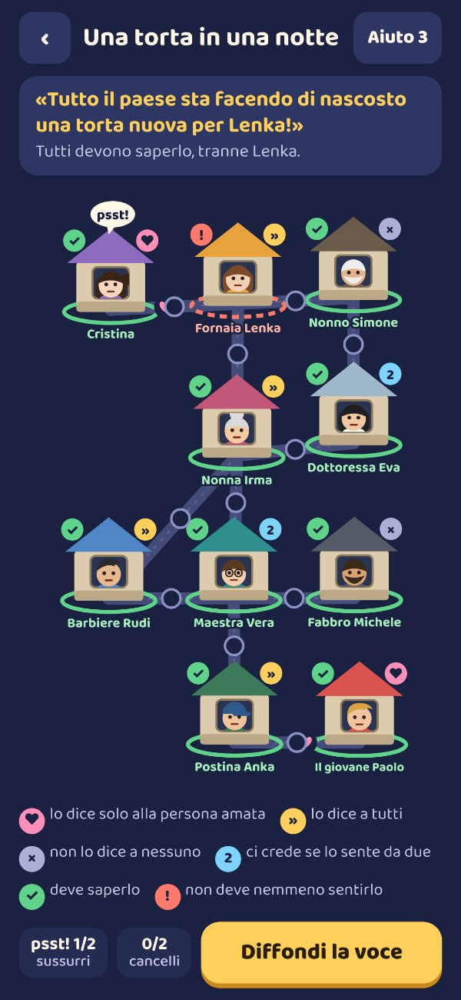
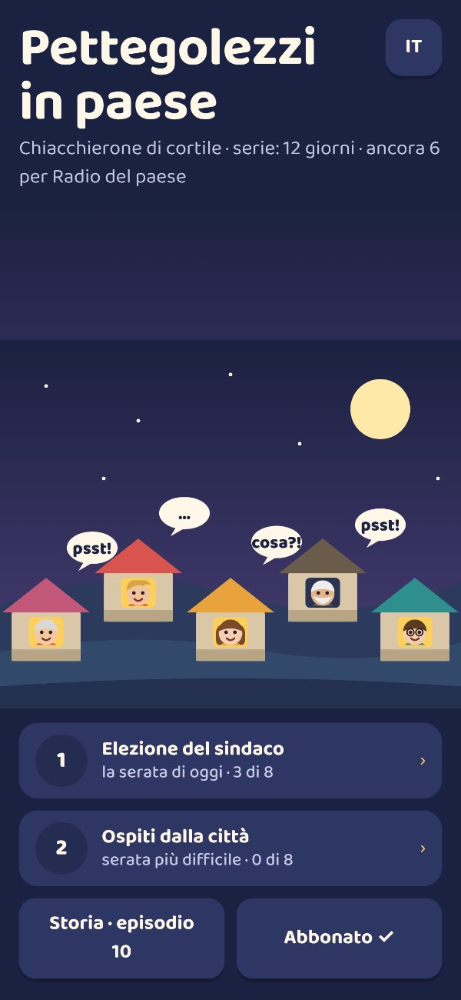
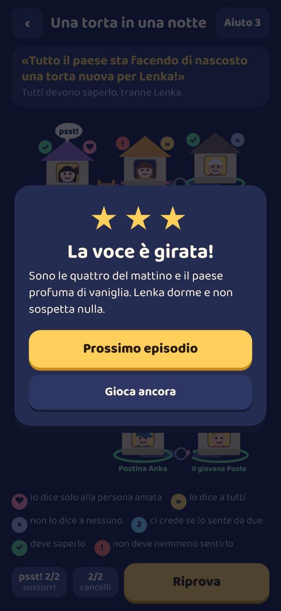

Chi deve sentirlo e chi non deve saperlo mai?
Un gioco di puzzle rilassante per la strada di casa. Sussurra una voce a un vicino e guardala viaggiare lungo i sentieri degli orti di Bisbigliano. La nonna lo dice a tutti, il nonno a nessuno, e il sindaco non crede a niente finché non lo sente due volte.
Presto su Google Play e sull’App Store
Come si gioca
- Leggi il pettegolezzo di oggi e chi deve sentirlo e chi no.
- Tocca un vicino per sussurrarglielo.
- Chiudi i cancelli perché non arrivi nella casa sbagliata.
- Diffondi la voce e guardala viaggiare. Ogni vicino ha le sue abitudini.


Due nuove serate ogni giorno
Otto pettegolezzi a serata, ognuno un po’ più difficile. Circa 20 minuti, perfetto per l’autobus o il treno.
Una storia a episodi
Una torta sparita, una proposta segreta e uno straniero in pelliccia, in due stagioni.
Un pollice, niente audio
Immagini grandi e chiare. Gioca in piedi sul tram e fermati quando vuoi.
Funziona offline
Niente account e niente internet. Le nuove serate arrivano da sole ogni giorno.
Prezzo
Download gratuito. La prima serata di ogni giorno e i primi tre episodi della storia sono gratis, con una breve pubblicità tra un pettegolezzo e l’altro. Pettegolezzi in paese Plus sblocca tutta la storia, una seconda serata più difficile ogni giorno e niente pubblicità: 7 giorni gratis, poi 4,99 € al mese o 39,99 € all’anno (o l’equivalente nella tua valuta). Aiuti extra: 5 a 0,99 €. Annulli quando vuoi nelle impostazioni dello store.
Aiuto e contatti
Sei bloccato su un pettegolezzo o hai un’idea per il paese? Scrivici, rispondiamo a ogni e-mail.
parentshelpmy@gmail.com